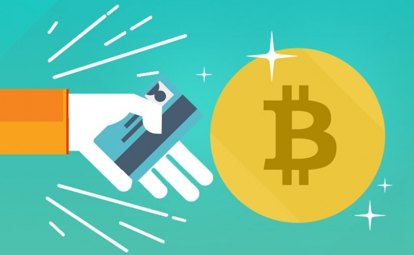
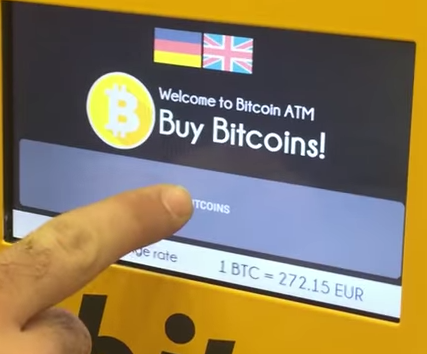
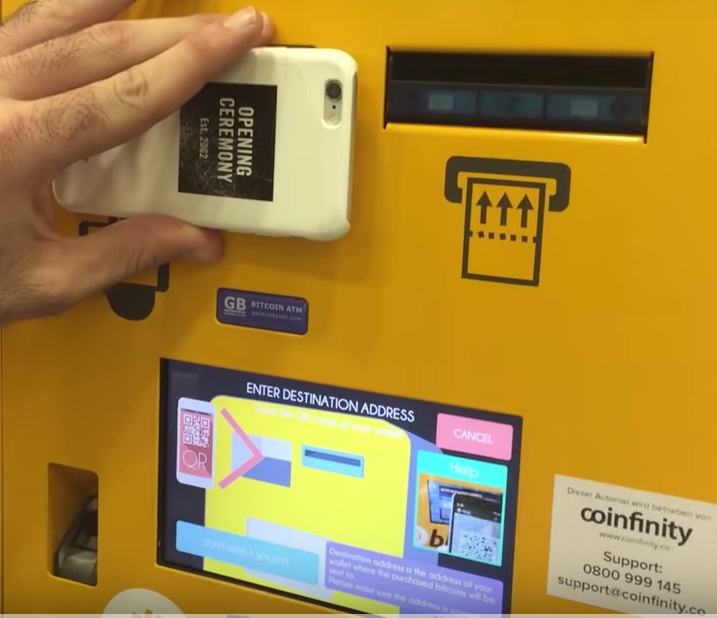
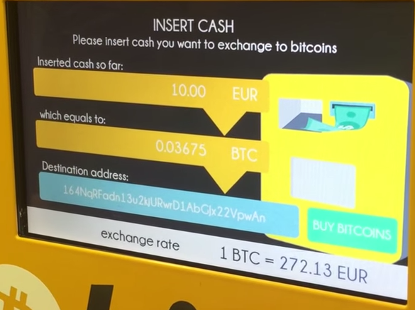
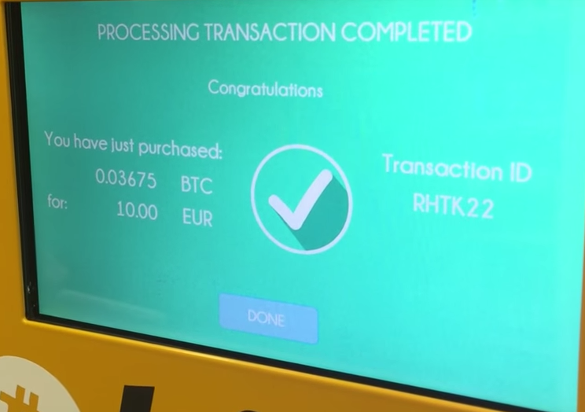
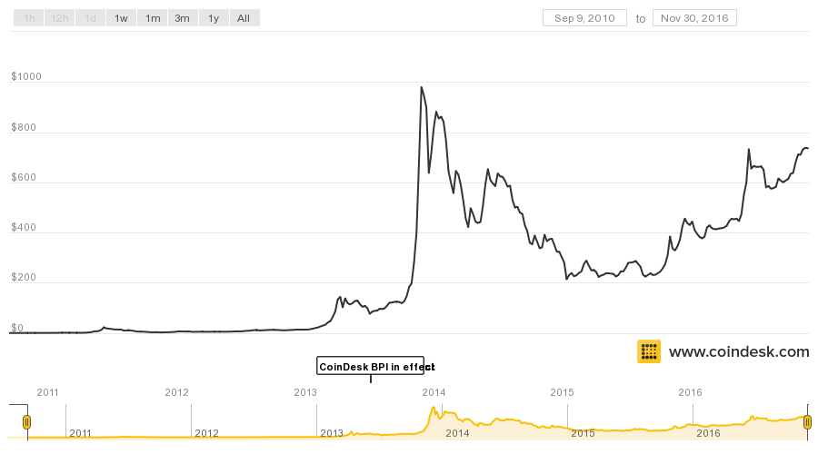

Bitcoin
Lily and Uriel
Decemeber 2016
What is Bitcoin?

How to get started?
- Inform yourself
- Choose your wallet
- Get or buy bitcoins
- Spend bitcoins
Using bitcoins

Step 1: Click “Buy Bitcoin”.

Step 2: How much cash?

Step 3: Scanning Address

Step 4: Insert Cash

Step 5: Completed Transaction

Coin Conversion?

Why use Bitcoin? Any Issues?
The Future of Bitcoin